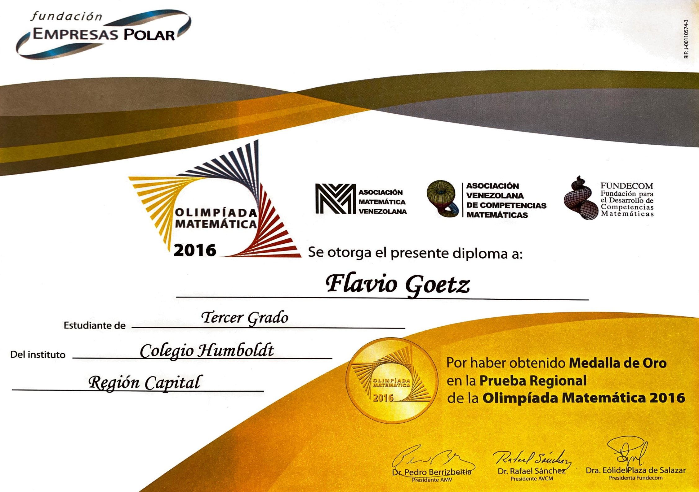
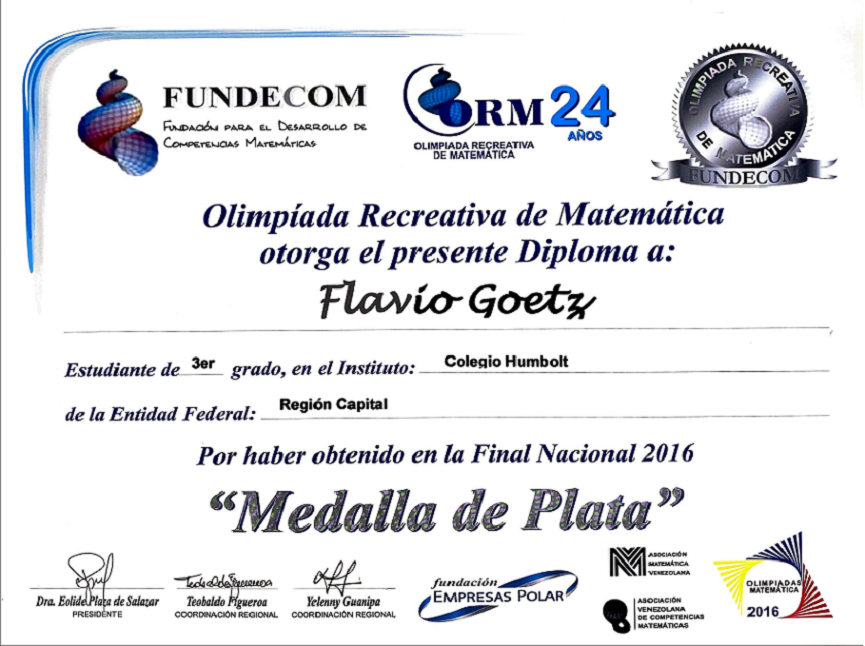
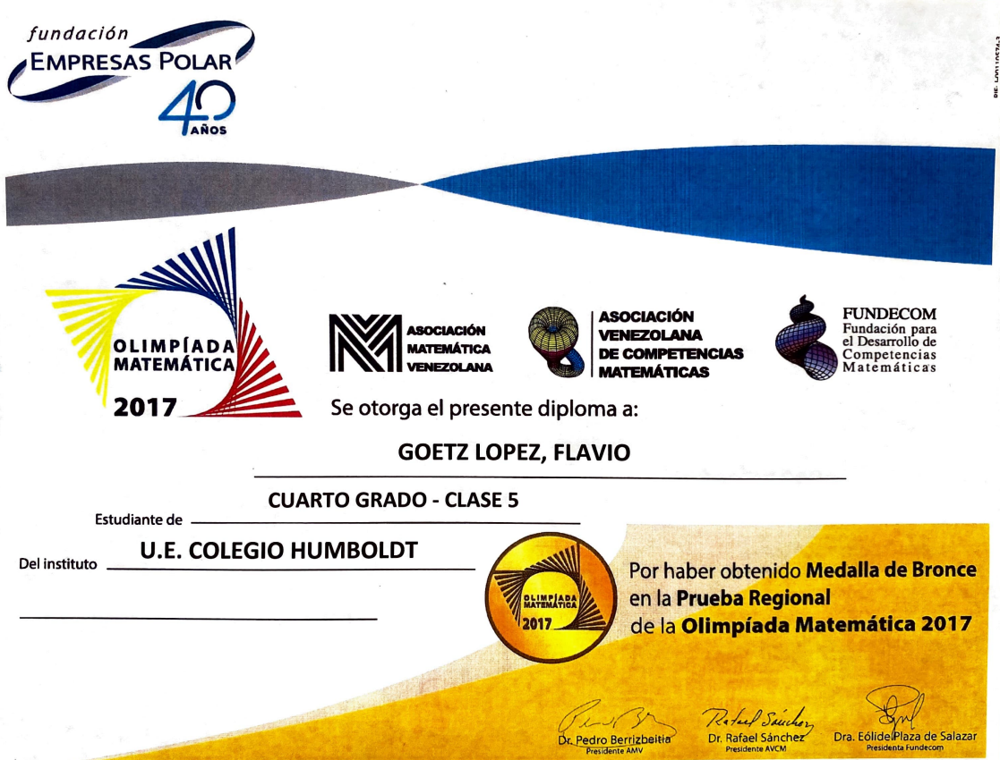
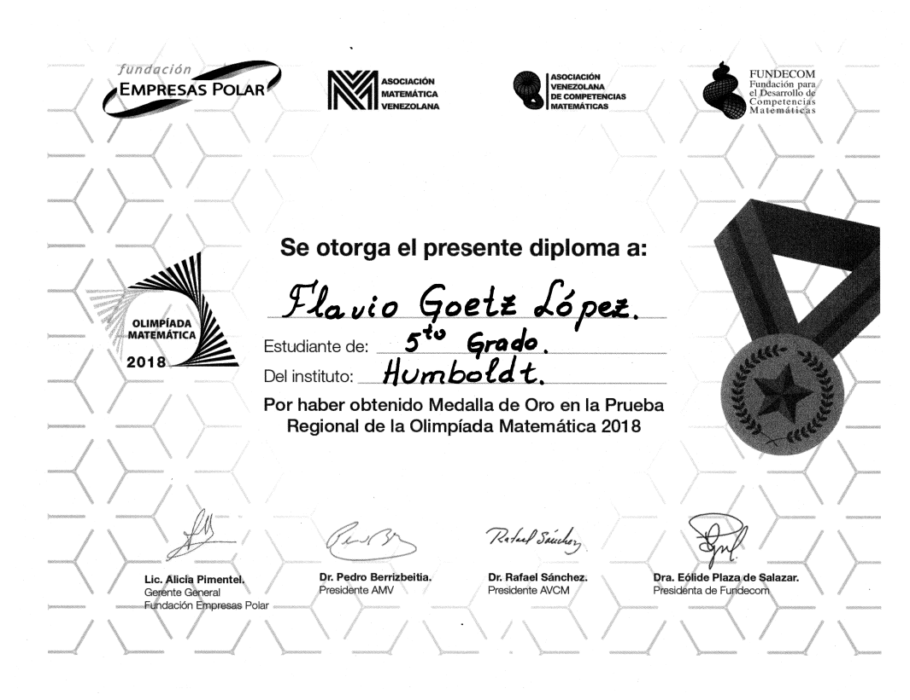
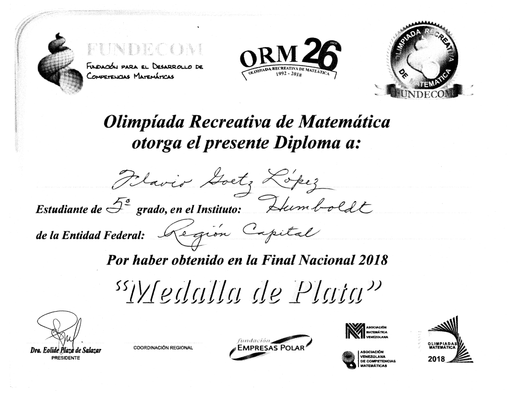
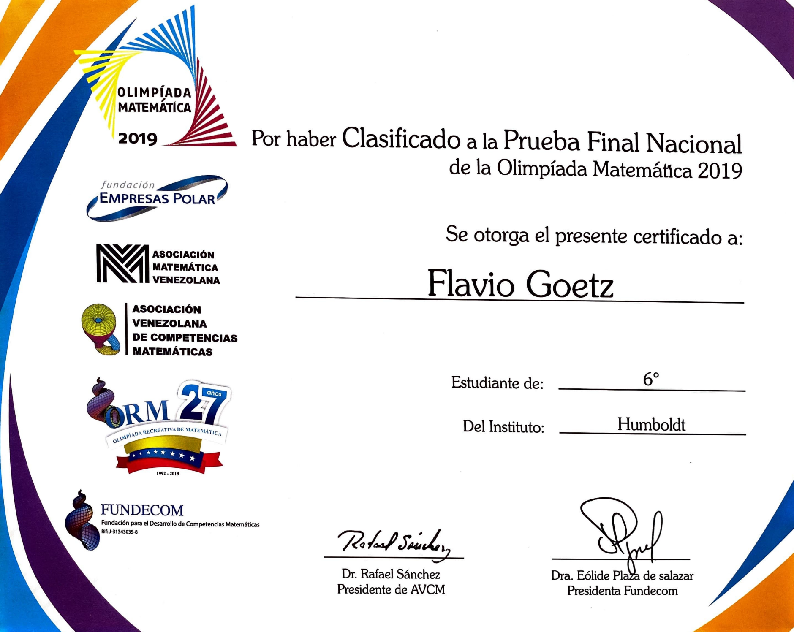
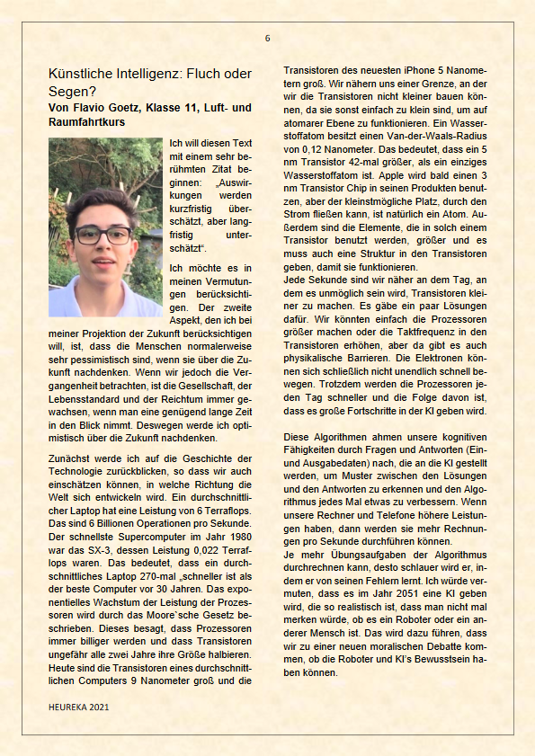
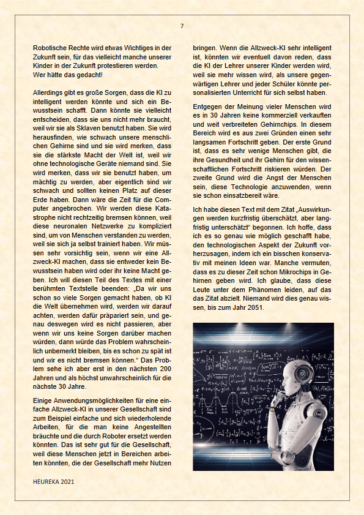
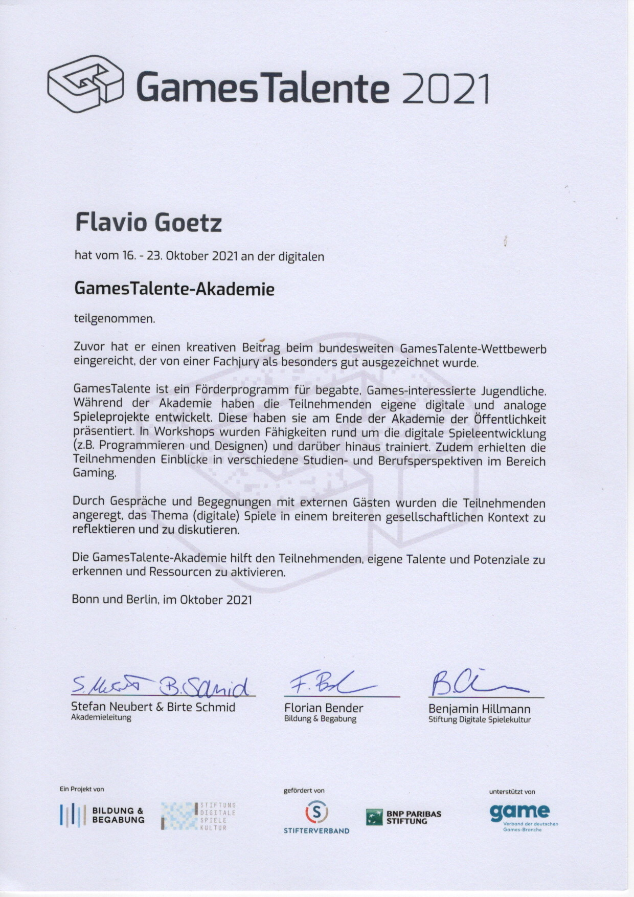

Academic Achievements:
Venezuelan Math Olympiad 9 times Performer:
- Venezuelan Math Olympics Silver Medal in 2014
- Venezuelan Math Olympics Regional Gold Medal in 2016 
- Venezuelan Math Olympics National Silver Medal in 2016 
- Venezuelan Math Olympics Regional Bronze Medal in 2017 
- Venezuelan Math Olympics Regional Gold Medal in 2018 
- Venezuelan Math Olympics National Silver Medal in 2018 
- Venezuelan Math Olympics Qualified to enter the Nationals in 2019 
- Venezuelan Math Olympics National Gold Medal in 2019
- Venezuelan Math Olympics Regional Silver Medal in 2021


HEUREKA - die Welt in 30 Jahren:
- There was a Competition about how the World was going to look like in 30 years. Children had the opportunity to submit essays, and my Essay was included in this Magazine along with some other student essays. "HEUREKA - die Welt in 30 Jahren"  
Games Talente 2021 Selected Participant
- (More information on the experience on the Programming part) 